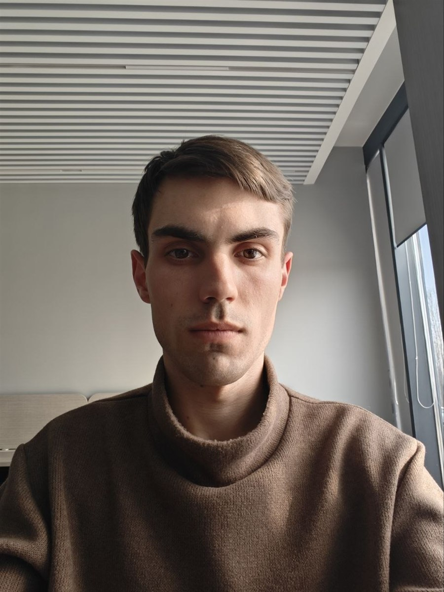

XR и Unity · мобильная разработка · бэкенд и инфраструктура · LLM и ML · веб · встраиваемые системыXR and Unity · mobile · backend and infrastructure · LLM and ML · web · embedded systems

Специализируюсь на VR/AR/MR-решениях и кроссплатформенных приложениях для B2B и B2C, включая международные и государственные проекты (ОАЭ, РФ). Курирую VR/XR-направление, проектирую backend корпоративного контура, внедряю LLM и ML в продуктовую логику. I specialise in VR/AR/MR solutions and cross-platform apps for B2B and B2C, including international and government projects (UAE, Russia). I lead the VR/XR direction, design corporate-grade backends and embed LLM and ML into product logic.
Веду продукты полного цикла: архитектура → реализация → CI/CD → публикация (App Store / Google Play / RuStore) → поддержка. I run products end-to-end: architecture → implementation → CI/CD → publishing (App Store / Google Play / RuStore) → support.
НовГУ им. Ярослава Мудрого. Информатика и вычислительная техника (искусственный интеллект).Yaroslav-the-Wise NovSU. Computer science & engineering (artificial intelligence).
НовГУ им. Ярослава Мудрого. Информатика и вычислительная техника.Yaroslav-the-Wise NovSU. Computer science & engineering.
Русский — родной · Английский — C1 (продвинутый).Russian — native · English — C1 (advanced).